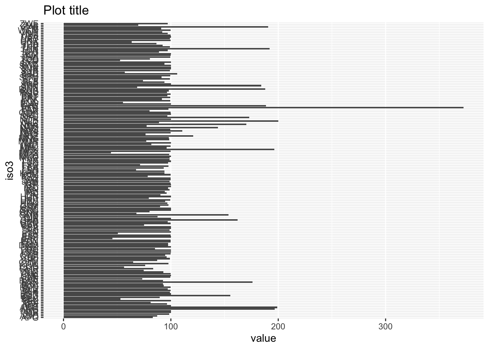

── Attaching packages ─────────────────────────────────────── tidyverse 1.3.2 ──
✔ ggplot2 3.3.6 ✔ purrr 0.3.4
✔ tibble 3.1.8 ✔ dplyr 1.0.9
✔ tidyr 1.2.0 ✔ stringr 1.4.0
✔ readr 2.1.2 ✔ forcats 0.5.1
── Conflicts ────────────────────────────────────────── tidyverse_conflicts() ──
✖ dplyr::filter() masks stats::filter()
✖ dplyr::lag() masks stats::lag()
here() starts at /Users/lschoebitz/Documents/gitrepos/ethz/gh-org-global-health-engineering/SDG-6-2-ReproducibilityUntitled
Here is your next cross-reference Figure 1.

Now when you write text and you want to refer to Figure 2.

Table
You can reference the table Table 1.
| type | n |
|---|---|
| Admin | 288 |
| Census | 159 |
| Other | 3 |
| Survey | 1225 |